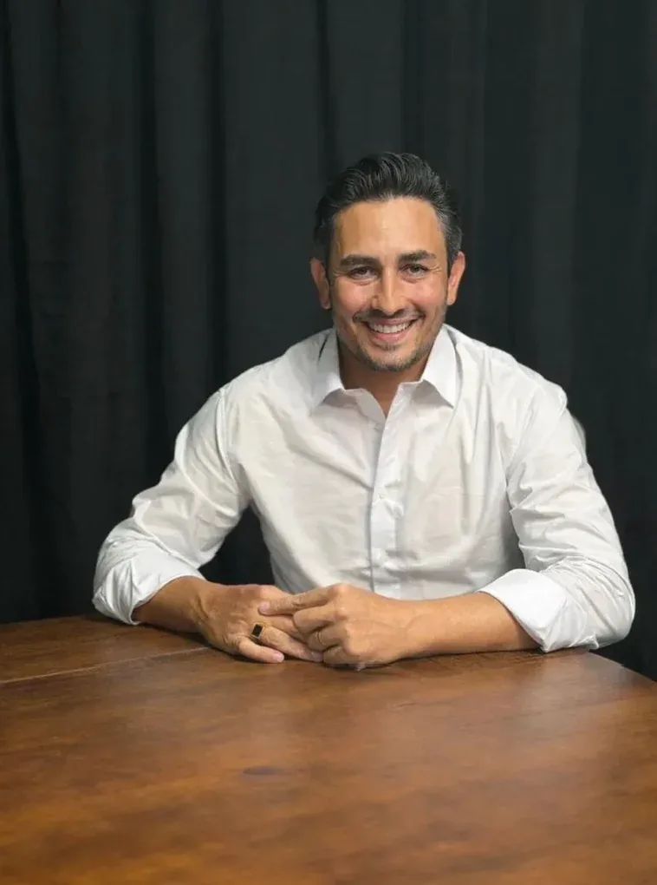

Imóveis e negócios conduzidos com discrição
Negociações imobiliárias e empresariais
Acompanho pessoalmente a compra e a venda de imóveis. Também aproximo empresários, compradores e investidores para a compra e a venda de empresas, a entrada de sócios e parcerias estratégicas.
Off-market
Oportunidades selecionadas. Negociações reservadas.
Você decide o que pode ser compartilhado e quando.
Seja um imóvel ou uma empresa, apresento a oportunidade diretamente a compradores selecionados, sem divulgação pública.
O que acreditamos
Confiança, discrição e respeito ao seu tempo
Comprar ou vender um imóvel ou uma empresa envolve patrimônio, planos e informações sensíveis. Em cada negociação, você decide o que pode ser compartilhado, com quem e quando.
Para mim, exclusividade significa dedicar tempo ao seu caso e apresentar a oportunidade às pessoas certas.
Como trabalhamos
Da primeira conversa à negociação
Seja um imóvel ou uma empresa, apresento a oportunidade diretamente a compradores selecionados, sem divulgação pública. Conduzo pessoalmente cada negociação.
Negócios empresariais
Compra, venda e parcerias entre empresas
Aproximo empresários, compradores e investidores interessados em comprar ou vender empresas, avaliar a entrada de um sócio ou desenvolver parcerias estratégicas, no Brasil e no exterior.
Entendo o interesse de cada parte, faço as apresentações e acompanho as conversas. Quando a operação envolve um imóvel, trato essa frente em conjunto com a negociação da empresa. Combinamos de antemão o que pode ser compartilhado.
Conexões internacionais
Conexões para imóveis e empresas
Em negócios imobiliários, trabalho com corretores e profissionais de mercados locais. Em negociações de empresas, aciono minha rede para identificar compradores, investidores ou parceiros compatíveis, conforme a oportunidade.
No Brasil e no exterior, compartilho informações de mercado e faço apresentações quando há alinhamento e autorização das partes.

Sobre mim
Ronaldo Ternus
Sou empresário e empreendedor. Há mais de 20 anos atuo no mercado, com experiência em vendas, negociação e negócios imobiliários e empresariais. À frente da Ternus Investimentos, uso o que aprendi para entender o que está em jogo para cada parte e aproximar as pessoas certas dos negócios certos.
Acredito que ninguém constrói bons negócios sozinho. Trabalho em conjunto com clientes e parceiros e aprendo diariamente com eles e com as novas conexões que faço. Conduzo cada negociação com integridade e seriedade, cuidando da segurança e da confidencialidade das informações compartilhadas.
Consulta privada
Fale diretamente comigo
Conte se você quer negociar um imóvel, conversar sobre uma empresa ou explorar uma parceria.
+55 48 99600-0549